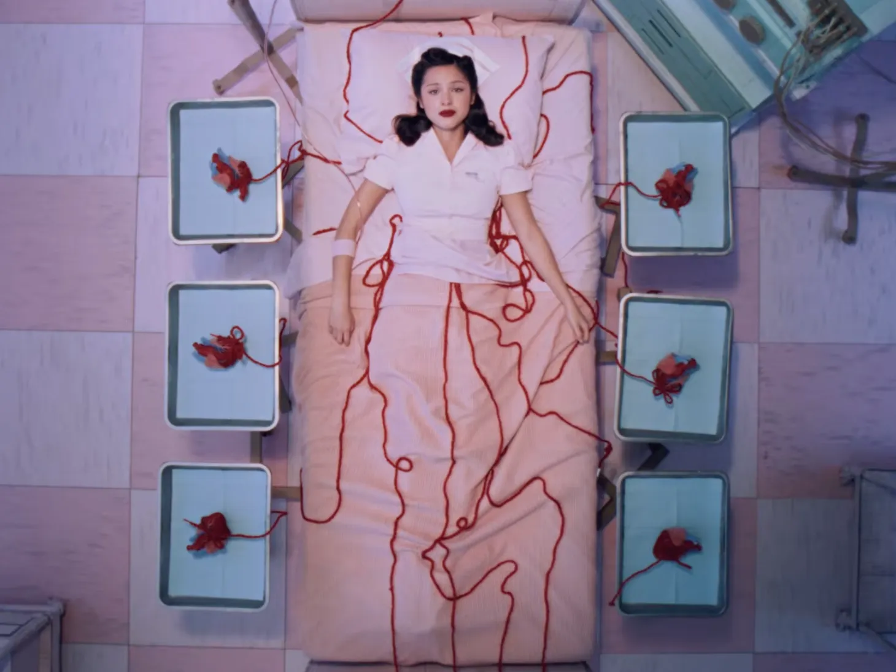
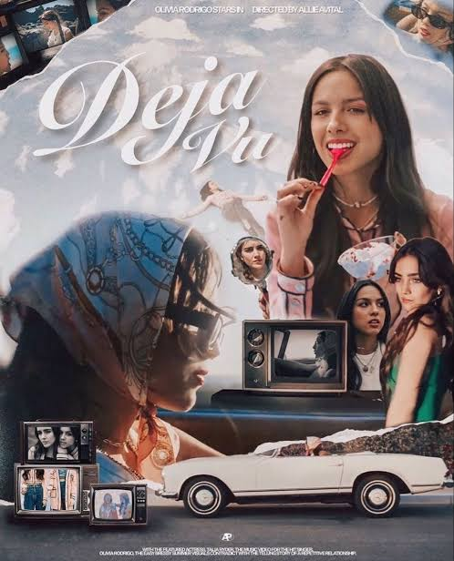
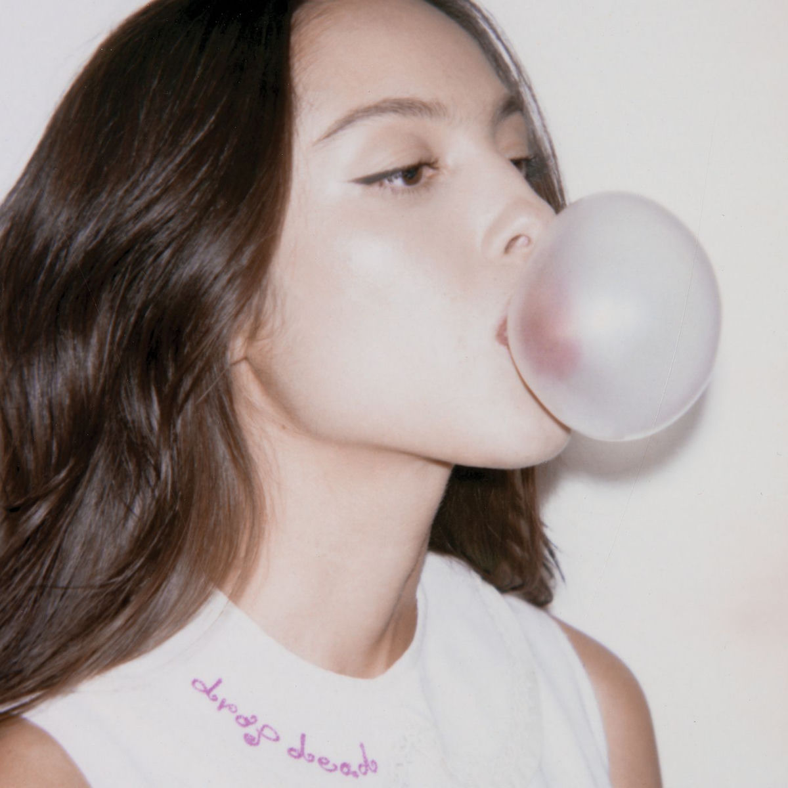
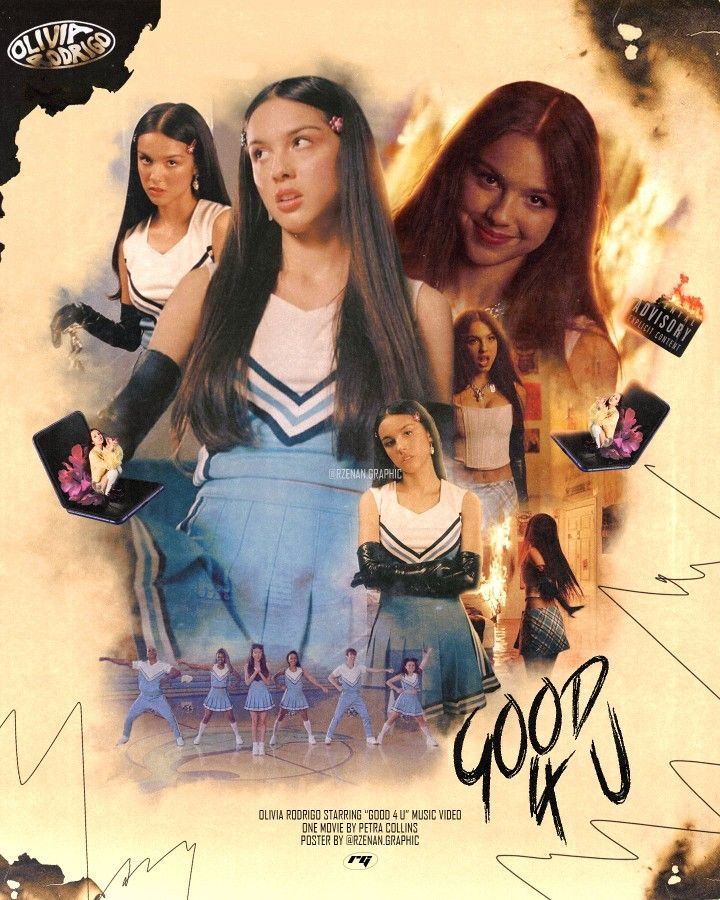
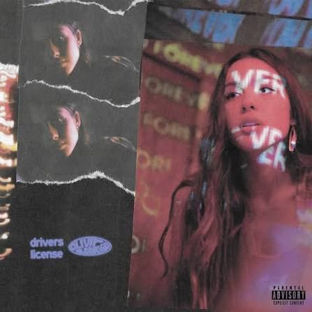

| Foto | Cancion | letra | video |
|---|---|---|---|
 |
The cure |
All the pretty girls In the foreground of my mind I thought I'd done enough But they keep moving the line I thought I found the antidote this time I thought I found the antidote this time And all the nights I spent Fighting bad thoughts in my room Feeling so alone, might as well be on the moon I thought I found the antidote with you I thought I found the antidote with you But my head is full of poison And my heart is full of doubt I got toxins in my bloodstream You tried hard to suck 'em out And it feels like medication And it's good for me, I'm sure But it don't matter how your love feels anymore It'll never be the cure It'll never be the cure Used to play a game in my head When I'd date a guy Tally up the girls that he fucked 'Til I start to cry I thought I found the antidote this time I thought I found the antidote this time But I'm unraveled (I'm unraveled) I'm unraveled (I'm unraveled) I'm unraveled (I'm unraveled) I'm unraveled (I'm unraveled) And my head is full of poison And my heart is full of doubt I got toxins in my bloodstream You tried hard to suck 'em out And it feels like medication And it's good for me, I'm sure But it don't matter how your love feels anymore It'll never be the cure It'll never be the cure, oh 'Cause, baby, I'm unraveled (I'm unraveled) I'm unraveled (I'm unraveled) I'm unraveled (I'm unraveled) I'm unraveled (I'm unraveled, I'm unraveled) Why can't you come stitch me up? (I'm unraveled) Why can't it ever be enough? (I'm unraveled) Why can't you come stitch me up? (I'm unraveled) Why can't it ever be enough? (I'm unraveled) It's not enough All because my head is full of poison And my heart is full of doubt I got toxins in my bloodstream (I'm unraveled) You tried so hard to suck out And it feels like medication (I'm unraveled) And it's good for me, I'm sure But it don't matter how your love feels anymore (I'm unraveled) It'll never be the cure It'll never be the cure It'll never be |
The cure |
 |
Deja Vu |
Car rides to Malibu Strawberry ice cream One spoon for two And trading jackets Laughing 'bout how small it looks on you (Ha-ha-ha-ha, ha-ha-ha-ha, ha-ha-ha-ha) Watching reruns of Glee Being annoying Singing in harmony I bet she's bragging To all her friends, saying you're so unique, hmm So when you gonna tell her That we did that, too? She thinks it's special But it's all reused That was our place, I found it first I made the jokes you tell to her when she's with you Do you get déjà vu when she's with you? Do you get déjà vu? (Ah), hmm Do you get déjà vu, huh? Do you call her Almost say my name? 'Cause let's be honest We kinda do sound the same Another actress I hate to think that I was just your type I'll bet that she knows Billy Joel 'Cause you played her "Uptown Girl" You're singing it together Now I bet you even tell her How you love her In between the chorus and the verse (ooh) (I love you) So when you gonna tell her That we did that, too? She thinks it's special But it's all reused That was the show we talked about Played you the song she's singing now when she's with you Do you get déjà vu when she's with you? Do you get déjà vu? Oh Do you get déjà vu? Strawberry ice cream in Malibu Don't act like we didn't do that shit, too You're trading jackets like we used to do (Yeah, everything is all reused) Play her piano, but she doesn't know (oh, oh) That I was the one who taught you Billy Joel (oh) A different girl now, but there's nothing new (I know you get déjà vu) |
Deja Vu |
 |
Drop Dead |
I know that the bar closes at 11 I hope you never finish that beer You know all the words to "Just Like Heaven" And I know why he wrote them Now that you're standing right here Ohh One night I was bored in bed And stalked you on the internet It's feminine intuition 'Cuz I always had a vision of us standing like this All pressed up in the bathroom line You're looking like an angel on the walls of Versailles The most alive I've ever been But kiss me and I might drop dead And I feel like I might throw up Left hook, right punch to the gut You're so so pretty boy I'm paranoid I made you up Yeah I'd love it if you walked me home If you promised we could go real slow 'Cuz I got chewing gum And a bunch of stuff I'd like to know Like, have you ever been to Japan? Or taken that Eurostar to France? I've been dropping hints all night That I'd love it if you held my hand, goddamn And then maybe we could make-makeout Clothes off and fall to the ground Let's go steady Let's go out And tell the whole damn world how One night I was bored in bed And stalked you on the internet It's feminine intuition 'Cuz I always had a vision of us standing like this All pressed up in the bathroom line You're looking like an angel on the walls of Versailles The most alive I've ever been But kiss me and I might Pisces and a Gemini But I think we might go really nice together If you let me stay the night Well I think I might just have to stay forever Pisces and a Gemini But I think we might go really nice together If you let me stay the night Well I think I might just have to stay forever Ohh One night I was bored in bed And stalked you on the internet It's feminine intuition 'Cuz I always had a vision of us standing like this All pressed up in the bathroom line You're looking like an angel on the walls of Versailles The most alive I've ever been But kiss me and I might Kiss me and I might Kiss me and I might drop dead |
Drop Dead |
 |
God for 4 |
Well, good for you, I guess you moved on really easily You found a new girl and it only took a couple weeks Remember when you said that you wanted to give me the world? (World) And good for you, I guess that you've been working on yourself I guess that therapist I found for you, she really helped Now you can be a better man for your brand-new girl (girl) Well, good for you, you look happy and healthy Not me, if you ever cared to ask Good for you, you're doing great out there without me, baby God, I wish that I could do that I've lost my mind, I've spent the night Crying on the floor of my bathroom But you're so unaffected, I really don't get it But I guess good for you Well, good for you, I guess you're gettin' everything you want (ah) You bought a new car and your career's really takin' off (ah) It's like we never even happened, baby, what the fuck is up with that? (Ha) And good for you, it's like you never even met me Remember when you swore to God I was the only Person who ever got you? Well, screw that and screw you You will never have to hurt the way you know that I do Well, good for you, you look happy and healthy Not me, if you ever cared to ask Good for you, you're doing great out there without me, baby God, I wish that I could do that I've lost my mind, I've spent the night Crying on the floor of my bathroom But you're so unaffected, I really don't get it But I guess good for you Ah-ah-ah-ah Ah-ah-ah-ah Maybe I'm too emotional But your apathy is like a wound in salt Maybe I'm too emotional Or maybe you never cared at all Maybe I'm too emotional Your apathy is like a wound in salt Maybe I'm too emotional Or maybe you never cared at all Well, good for you, you look happy and healthy Not me, if you ever cared to ask Good for you, you're doing great out there without me, baby Like a damn sociopath I've lost my mind, I've spent the night Crying on the floor of my bathroom But you're so unaffected, I really don't get it But I guess good for you Well, good for you, I guess you moved on really easily |
God for 4 |
 |
Drivers License |
I got my driver's license last week Just like we always talked about 'Cause you were so excited for me To finally drive up to your house But today I drove through the suburbs Cryin' 'cause you weren't around And you're probably with that blonde girl Who always made me doubt She's so much older than me She's everything I'm insecure about Yeah, today I drove through the suburbs 'Cause how could I ever love someone else? And I know we weren't perfect but I've never felt this way for no one And I just can't imagine how you could be so okay now that I'm gone Guess you didn't mean what you wrote in that song about me 'Cause you said forever, now I drive alone past your street And all my friends are tired Of hearing how much I miss you, but I kinda feel sorry for them 'Cause they'll never know you the way that I do, yeah Today I drove through the suburbs And pictured I was driving home to you And I know we weren't perfect But I've never felt this way for no one, oh And I just can't imagine how you could be so okay now that I'm gone I guess you didn't mean what you wrote in that song about me 'Cause you said forever, now I drive alone past your street Red lights, stop signs I still see your face in the white cars, front yards Can't drive past the places we used to go to 'Cause I still fuckin' love you, babe (ooh, ooh, ooh, ooh) Sidewalks we crossed I still hear your voice in the traffic, we're laughing Over all the noise God, I'm so blue, know we're through But I still fuckin' love you, babe (ooh, ooh, ooh, ooh) I know we weren't perfect but I've never felt this way for no one And I just can't imagine how you could be so okay now that I'm gone 'Cause you didn't mean what you wrote in that song about me 'Cause you said forever, now I drive alone past your street Yeah, you said forever, now I drive alone past your street | Drivers License |